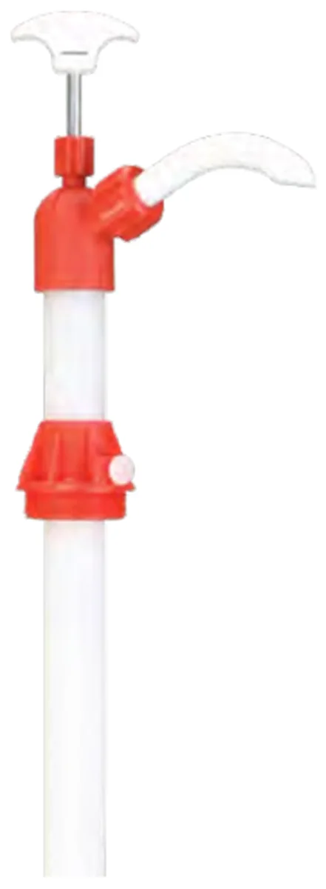

GROZ · Fuel & DEF Handling
Chemical Pumps Nylon
CAT NR CMP/12S · ORD NR 44186
| CAT NR (catalogue number) | CMP/12S |
|---|---|
| ORD NR (order number) | 44186 |
| Box quantity | 40 |
| Flow rate upto | 190 ml (6.3 oz) /stroke |
| For use on | 25 litre drums |
Open in the catalogue The catalogue PDF, page 258
From the GROZ Fluid Handling CC-07 catalogue. Not yet verified: these details were read from the printed catalogue automatically; check the catalogue page before ordering.